CODING AGENTS AS PIXEL WORLD MODELS
traex/DeepSeek-V4.1-Flash · dynamic_spatial_relationship_0018
点击播放 · 原生 RGB 像素
逐轮保存的候选
回放视频、检查图与代码变化。
每份候选均可单独播放。实际图片检查记录在下方工具轨迹中。
候选 01播放与检查图
点击播放 · 原生 RGB 像素

展开代码变化
--- 上一保存版本
+++ 本次保存版本
@@ -0,0 +1,498 @@
+from __future__ import annotations
+
+import math
+from pathlib import Path
+
+import numpy as np
+from PIL import Image, ImageDraw, ImageFilter
+
+import artifact_io
+
+
+WIDTH = 256
+HEIGHT = 144
+FRAMES = 20
+FPS = 4.0
+SS = 4
+
+
+def xy(x: float, y: float) -> tuple[int, int]:
+ return round(x * SS), round(y * SS)
+
+
+def scaled_points(points):
+ return [xy(x, y) for x, y in points]
+
+
+def rgba_layer(size=(WIDTH * SS, HEIGHT * SS)):
+ return Image.new("RGBA", size, (0, 0, 0, 0))
+
+
+def blend(base: Image.Image, layer: Image.Image) -> Image.Image:
+ return Image.alpha_composite(base.convert("RGBA"), layer).convert("RGB")
+
+
+def ellipse_points(cx, cy, rx, ry, count=48):
+ return [
+ (cx + rx * math.cos(2 * math.pi * i / count),
+ cy + ry * math.sin(2 * math.pi * i / count))
+ for i in range(count)
+ ]
+
+
+def tapered_leg(draw, x0, y0, x1, y1, w0, w1, fill, outline):
+ dx, dy = x1 - x0, y1 - y0
+ length = math.hypot(dx, dy) or 1.0
+ nx, ny = -dy / length, dx / length
+ pts = [
+ (x0 + nx * w0 / 2, y0 + ny * w0 / 2),
+ (x1 + nx * w1 / 2, y1 + ny * w1 / 2),
+ (x1 - nx * w1 / 2, y1 - ny * w1 / 2),
+ (x0 - nx * w0 / 2, y0 - ny * w0 / 2),
+ ]
+ draw.polygon(scaled_points(pts), fill=fill, outline=outline, width=round(1.1 * SS))
+
+
+def build_background():
+ w, h = WIDTH * SS, HEIGHT * SS
+ y = np.arange(h, dtype=np.float32)[:, None]
+ x = np.arange(w, dtype=np.float32)[None, :]
+
+ wall_top = np.array([116, 145, 137], dtype=np.float32)
+ wall_bottom = np.array([175, 184, 161], dtype=np.float32)
+ t = np.clip(y / (48 * SS), 0, 1)
+ wall = wall_top[None, None, :] * (1 - t[..., None]) + wall_bottom[None, None, :] * t[..., None]
+ wall = np.broadcast_to(wall, (h, w, 3)).copy()
+
+ floor_y0 = 45 * SS
+ f = np.clip((y - floor_y0) / ((HEIGHT - 45) * SS), 0, 1)
+ floor_dark = np.array([102, 75, 54], dtype=np.float32)
+ floor_light = np.array([189, 142, 92], dtype=np.float32)
+ floor = floor_dark[None, None, :] * (1 - f[..., None]) + floor_light[None, None, :] * f[..., None]
+ floor = np.broadcast_to(floor, (h, w, 3)).copy()
+ mask = y >= floor_y0
+ wall[mask[..., 0]] = floor[mask[..., 0]]
+
+ # Broad sunlight coming from the window at the left.
+ sun = np.exp(-((x - 57 * SS) / (75 * SS)) ** 2 - ((y - 37 * SS) / (64 * SS)) ** 2)
+ wall += sun[..., None] * np.array([24, 23, 13], dtype=np.float32)
+
+ # Subtle wall plaster texture.
+ rng = np.random.default_rng(18)
+ texture = rng.normal(0, 2.1, (h // 4, w // 4, 1)).repeat(4, axis=0).repeat(4, axis=1)
+ wall[: floor_y0] += texture[: floor_y0]
+
+ image = Image.fromarray(np.clip(wall, 0, 255).astype(np.uint8), "RGB").convert("RGBA")
+ draw = ImageDraw.Draw(image, "RGBA")
+
+ # Baseboard.
+ draw.rectangle([0, 43 * SS, w, 48 * SS], fill=(77, 70, 59, 255))
+ draw.rectangle([0, 43 * SS, w, 44 * SS], fill=(205, 196, 168, 255))
+ draw.rectangle([0, 47 * SS, w, 48 * SS], fill=(56, 49, 43, 255))
+
+ # Floor plank seams radiate toward the horizon.
+ floor_layer = rgba_layer()
+ fd = ImageDraw.Draw(floor_layer, "RGBA")
+ vp = (128, 45)
+ for bx in range(-80, 380, 24):
+ fd.line([xy(*vp), xy(bx, 146)], fill=(73, 49, 33, 55), width=round(0.8 * SS))
+ for fy, alpha in [(54, 42), (64, 50), (77, 55), (94, 62), (116, 72), (143, 80)]:
+ fd.line([xy(0, fy), xy(256, fy)], fill=(235, 199, 151, alpha), width=round(0.7 * SS))
+ # A soft pool of window light on the floor.
+ fd.polygon(
+ scaled_points([(13, 47), (69, 47), (121, 139), (50, 139)]),
+ fill=(255, 225, 165, 28),
+ )
+ image = blend(image, floor_layer)
+ draw = ImageDraw.Draw(image, "RGBA")
+
+ # Woven rug beneath the table.
+ rug = scaled_points([(33, 69), (224, 69), (239, 135), (18, 135)])
+ draw.polygon(rug, fill=(146, 84, 66, 255), outline=(92, 57, 48, 255), width=SS)
+ draw.polygon(
+ scaled_points([(39, 73), (219, 73), (231, 130), (27, 130)]),
+ fill=(171, 106, 80, 255),
+ outline=(220, 179, 134, 190),
+ width=round(1.2 * SS),
+ )
+ draw.polygon(
+ scaled_points([(45, 78), (213, 78), (222, 125), (35, 125)]),
+ fill=(151, 88, 70, 255),
+ outline=(105, 63, 54, 130),
+ width=round(0.8 * SS),
+ )
+ # Small woven diamonds, kept low-contrast so the cat stays legible.
+ for cx, cy, size in [(72, 101, 6), (124, 104, 7), (177, 102, 6), (206, 116, 4), (47, 117, 4)]:
+ draw.polygon(
+ scaled_points([(cx, cy - size), (cx + size, cy), (cx, cy + size), (cx - size, cy)]),
+ outline=(226, 185, 144, 88),
+ width=round(0.7 * SS),
+ )
+
+ # Window with warm morning light.
+ draw.rounded_rectangle(
+ [xy(10, 8), xy(57, 43)],
+ radius=round(2 * SS),
+ fill=(54, 75, 76, 255),
+ outline=(225, 211, 177, 255),
+ width=round(1.8 * SS),
+ )
+ draw.rectangle([xy(14, 12), xy(53, 39)], fill=(173, 211, 212, 255))
+ draw.rectangle([xy(14, 12), xy(33, 39)], fill=(206, 229, 219, 255))
+ draw.rectangle([xy(15, 13), xy(31, 37)], fill=(214, 233, 218, 255))
+ draw.line([xy(33, 12), xy(33, 39)], fill=(225, 215, 187, 255), width=round(1.6 * SS))
+ draw.line([xy(14, 25), xy(53, 25)], fill=(225, 215, 187, 255), width=round(1.4 * SS))
+ draw.rectangle([xy(14, 12), xy(53, 14)], fill=(242, 235, 207, 150))
+ # Curtain folds.
+ draw.polygon(
+ scaled_points([(56, 8), (64, 9), (62, 43), (53, 43)]),
+ fill=(213, 179, 139, 255),
+ )
+ for fx in (57, 59, 61):
+ draw.line([xy(fx, 10), xy(fx - 1, 41)], fill=(165, 126, 98, 110), width=round(0.7 * SS))
+
+ # A framed print on the right wall.
+ draw.rounded_rectangle(
+ [xy(198, 13), xy(237, 39)],
+ radius=round(1.5 * SS),
+ fill=(73, 55, 45, 255),
+ outline=(206, 184, 144, 255),
+ width=round(1.4 * SS),
+ )
+ draw.rectangle([xy(202, 17), xy(233, 35)], fill=(191, 172, 139, 255))
+ draw.ellipse([xy(211, 20), xy(224, 33)], fill=(177, 91, 59, 255))
+ draw.polygon(scaled_points([(202, 34), (214, 23), (224, 34)]), fill=(91, 112, 96, 255))
+ draw.polygon(scaled_points([(216, 34), (227, 25), (233, 34)]), fill=(115, 126, 96, 255))
+
+ # Fine floor highlight and room vignette are added after compositing.
+ return image
+
+
+def draw_rear_legs(draw):
+ dark = (79, 46, 29, 255)
+ wood = (111, 68, 43, 255)
+ tapered_leg(draw, 84, 66, 88, 103, 4.8, 3.6, wood, dark)
+ tapered_leg(draw, 177, 66, 173, 103, 4.8, 3.6, wood, dark)
+ draw.line([xy(86, 71), xy(87, 98)], fill=(157, 103, 66, 120), width=round(0.8 * SS))
+ draw.line([xy(175, 71), xy(174, 98)], fill=(151, 98, 63, 100), width=round(0.8 * SS))
+
+
+def draw_table(image: Image.Image):
+ layer = rgba_layer()
+ draw = ImageDraw.Draw(layer, "RGBA")
+ dark = (61, 39, 27, 255)
+ edge = (104, 62, 39, 255)
+
+ # Front legs.
+ tapered_leg(draw, 60, 81, 56, 126, 6.2, 4.2, (122, 75, 46, 255), dark)
+ tapered_leg(draw, 199, 81, 204, 126, 6.2, 4.2, (122, 75, 46, 255), dark)
+ draw.line([xy(58, 88), xy(56, 122)], fill=(196, 133, 84, 110), width=round(0.9 * SS))
+ draw.line([xy(201, 88), xy(202, 122)], fill=(192, 128, 79, 100), width=round(0.9 * SS))
+
+ # Apron under the front edge.
+ draw.polygon(
+ scaled_points([(50, 80), (207, 80), (204, 86), (55, 86)]),
+ fill=(103, 61, 39, 255),
+ outline=dark,
+ width=round(1.1 * SS),
+ )
+ draw.line([xy(58, 82), xy(198, 82)], fill=(180, 112, 67, 120), width=round(0.8 * SS))
+
+ # Tabletop.
+ top = [(75, 58), (184, 58), (207, 80), (50, 80)]
+ draw.polygon(scaled_points(top), fill=(142, 87, 52, 255), outline=dark, width=round(1.2 * SS))
+
+ # Grain and sheen clipped to the tabletop.
+ grain = rgba_layer()
+ gd = ImageDraw.Draw(grain, "RGBA")
+ for yy, alpha in [(61, 80), (64, 70), (68, 82), (72, 62), (76, 74)]:
+ left = 75 - (yy - 58) * 1.136
+ right = 184 + (yy - 58) * 1.045
+ gd.line([xy(left + 4, yy), xy(right - 4, yy + 0.8)], fill=(69, 41, 27, alpha), width=round(0.7 * SS))
+ for x0, y0, x1, y1 in [(87, 63, 110, 64), (119, 71, 145, 70), (154, 65, 177, 67),
+ (77, 75, 96, 74), (165, 76, 190, 75)]:
+ gd.line([xy(x0, y0), xy(x1, y1)], fill=(224, 158, 92, 52), width=round(0.7 * SS))
+ mask = Image.new("L", layer.size, 0)
+ md = ImageDraw.Draw(mask)
+ md.polygon(scaled_points(top), fill=255)
+ layer = Image.composite(Image.alpha_composite(layer, grain), layer, mask)
+
+ draw = ImageDraw.Draw(layer, "RGBA")
+ # Highlight along the rear edge and front lip.
+ draw.line([xy(76, 58.5), xy(183, 58.5)], fill=(224, 157, 91, 210), width=round(1.0 * SS))
+ draw.line([xy(51, 79.5), xy(206, 79.5)], fill=(200, 126, 74, 210), width=round(1.2 * SS))
+
+ # A small ceramic bowl with oranges at the left of the tabletop.
+ draw.ellipse([xy(88, 68), xy(117, 77)], fill=(54, 72, 68, 255), outline=(35, 48, 46, 255), width=round(0.9 * SS))
+ draw.ellipse([xy(90, 66), xy(115, 74)], fill=(194, 181, 147, 255), outline=(76, 77, 66, 255), width=round(0.8 * SS))
+ for cx, cy, rr in [(96, 68, 4.0), (104, 67, 4.2), (110, 70, 3.8)]:
+ draw.ellipse([xy(cx - rr, cy - rr), xy(cx + rr, cy + rr)], fill=(218, 115, 41, 255), outline=(129, 62, 27, 255), width=round(0.6 * SS))
+ draw.ellipse([xy(cx - 1.7, cy - 2.2), xy(cx + 0.5, cy - 0.5)], fill=(255, 188, 92, 180))
+ draw.arc([xy(91, 65), xy(114, 73)], 202, 342, fill=(245, 224, 184, 170), width=round(0.7 * SS))
+
+ # A thin book adds scale without crowding the cat's route.
+ draw.polygon(
+ scaled_points([(151, 72), (178, 71), (182, 76), (154, 78)]),
+ fill=(55, 80, 82, 255),
+ outline=(37, 53, 54, 255),
+ width=round(0.8 * SS),
+ )
+ draw.line([xy(153, 73), xy(179, 72)], fill=(208, 184, 127, 150), width=round(0.8 * SS))
+ draw.line([xy(153, 76), xy(180, 75)], fill=(226, 207, 158, 170), width=round(0.8 * SS))
+
+ return blend(image, layer)
+
+
+PATH_KEYS = [
+ (0, 112.0, 120.0, 1.00, 0.0),
+ (3, 114.0, 119.0, 1.00, 0.0),
+ (4, 119.0, 118.0, 1.00, -2.0),
+ (5, 136.0, 116.0, 0.99, -4.0),
+ (6, 158.0, 112.0, 0.97, -8.0),
+ (7, 184.0, 108.0, 0.94, -10.0),
+ (8, 212.0, 104.0, 0.91, -12.0),
+ (9, 233.0, 99.0, 0.89, -13.0),
+ (10, 237.0, 90.0, 0.87, -16.0),
+ (11, 231.0, 81.0, 0.84, -18.0),
+ (12, 222.0, 72.0, 0.81, -19.0),
+ (13, 211.0, 68.0, 0.78, -16.0),
+ (14, 203.0, 66.0, 0.75, -11.0),
+ (15, 196.0, 64.5, 0.73, -6.0),
+ (16, 190.0, 63.0, 0.72, -1.0),
+ (17, 186.0, 62.0, 0.71, 1.0),
+ (18, 183.0, 61.5, 0.71, 2.0),
+ (19, 181.0, 61.0, 0.71, 2.0),
+]
+
+
+def smoothstep(t):
+ return t * t * (3 - 2 * t)
+
+
+def sample_path(frame):
+ for i in range(len(PATH_KEYS) - 1):
+ a, b = PATH_KEYS[i], PATH_KEYS[i + 1]
+ if a[0] <= frame <= b[0]:
+ t = (frame - a[0]) / max(1, b[0] - a[0])
+ t = smoothstep(t)
+ return tuple(a[k] * (1 - t) + b[k] * t for k in range(1, 5))
+ return PATH_KEYS[-1][1:]
+
+
+def bezier(points, samples=28):
+ p0, p1, p2, p3 = points
+ out = []
+ for i in range(samples):
+ t = i / (samples - 1)
+ u = 1 - t
+ out.append((
+ u**3 * p0[0] + 3 * u**2 * t * p1[0] + 3 * u * t**2 * p2[0] + t**3 * p3[0],
+ u**3 * p0[1] + 3 * u**2 * t * p1[1] + 3 * u * t**2 * p2[1] + t**3 * p3[1],
+ ))
+ return out
+
+
+def draw_cat(image, cat_x, cat_y, cat_scale, angle_deg, frame):
+ layer = rgba_layer()
+ draw = ImageDraw.Draw(layer, "RGBA")
+ s = cat_scale
+ angle = math.radians(angle_deg)
+ ca, sa = math.cos(angle), math.sin(angle)
+
+ def T(p):
+ x, y = p
+ return (cat_x + s * (x * ca - y * sa), cat_y + s * (x * sa + y * ca))
+
+ def pts(local):
+ return scaled_points([T(p) for p in local])
+
+ def width(v):
+ return max(1, round(v * s * SS))
+
+ orange = (202, 112, 49, 255)
+ orange_light = (229, 145, 68, 255)
+ orange_dark = (164, 80, 34, 255)
+ outline = (79, 43, 26, 255)
+ cream = (239, 215, 172, 255)
+ stripe = (112, 62, 33, 230)
+
+ idle = frame <= 4
+ settle = frame >= 16
+ if idle:
+ stride = math.sin(frame * 0.45) * 0.10
+ tail_sway = math.sin(frame * 0.75)
+ bob = 0.0
+ else:
+ phase = (frame - 4) * 1.85
+ stride = math.sin(phase)
+ tail_sway = math.sin(phase * 0.62)
+ bob = -abs(math.sin(phase)) * (0.45 if settle else 1.25)
+
+ # Tail: curled under the table, streaming behind while running.
+ if idle:
+ tail_pts = [(-15, -9), (-25, -6 + tail_sway), (-31, -17), (-22, -21)]
+ elif settle:
+ tail_pts = [(-15, -9), (-25, -10), (-30, -22), (-21, -24 + tail_sway)]
+ else:
+ tail_pts = [(-15, -9), (-26, -8), (-35, -16 + 3 * tail_sway), (-36, -6 + 2 * tail_sway)]
+ tail_curve = [T(p) for p in bezier(tail_pts)]
+ draw.line(scaled_points(tail_curve), fill=outline, width=width(6.0), joint="curve")
+ draw.line(scaled_points(tail_curve), fill=orange, width=width(4.0), joint="curve")
+ for k in (0.30, 0.52, 0.73):
+ idx = min(len(tail_curve) - 1, round(k * (len(tail_curve) - 1)))
+ p = T(tail_curve[idx])
+ draw.ellipse([xy(p[0] - 1.1 * s, p[1] - 1.1 * s), xy(p[0] + 1.1 * s, p[1] + 1.1 * s)], fill=stripe)
+
+ # Far legs.
+ far_hind_paw = (-12.5 - 3.0 * stride, -0.2 if not idle else 0)
+ far_front_paw = (10.0 - 3.2 * stride, -1.5 if not idle and abs(stride) > 0.4 else 0)
+ for hip, paw, col in [
+ ((-9.5, -8.0), far_hind_paw, orange_dark),
+ ((8.5, -8.0), far_front_paw, orange_dark),
+ ]:
+ knee = ((hip[0] + paw[0]) * 0.5 + 1.0, -3.0)
+ draw.line([xy(*T(hip)), xy(*T(knee)), xy(*T(paw))], fill=outline, width=width(4.3), joint="curve")
+ draw.line([xy(*T(hip)), xy(*T(knee)), xy(*T(paw))], fill=col, width=width(2.7), joint="curve")
+
+ # Body, belly, and shoulder.
+ body_pts = ellipse_points(-1.5, -10.5 + bob, 16.7, 6.7, 56)
+ draw.polygon(pts(body_pts), fill=orange, outline=outline, width=width(1.9))
+ belly_pts = ellipse_points(-2.0, -7.0 + bob, 13.0, 3.0, 48)
+ draw.polygon(pts(belly_pts), fill=(218, 151, 91, 255))
+ chest_pts = ellipse_points(9.8, -9.2 + bob, 5.6, 5.3, 36)
+ draw.polygon(pts(chest_pts), fill=cream)
+ draw.line([xy(*T((-16.0, -12.4 + bob))), xy(*T((-8.0, -14.3 + bob))), xy(*T((1.0, -14.4 + bob)))],
+ fill=(248, 176, 95, 190), width=width(1.1), joint="curve")
+
+ # Tabby body stripes.
+ for x0, y0, x1, y1 in [
+ (-12, -15.4, -10.5, -8.0),
+ (-7, -16.0, -5.0, -7.4),
+ (-1.5, -16.2, 1.0, -7.8),
+ (4.0, -15.5, 6.0, -8.4),
+ ]:
+ draw.line([xy(*T((x0, y0 + bob))), xy(*T((x1, y1 + bob)))], fill=stripe, width=width(1.25))
+
+ # Near legs.
+ near_hind_paw = (-9.0 + 3.5 * stride, 0)
+ near_front_paw = (10.5 + 3.2 * stride, 0)
+ for hip, paw in [((-9.0, -7.5), near_hind_paw), ((9.0, -7.8), near_front_paw)]:
+ knee = ((hip[0] + paw[0]) * 0.5 - 0.4, -2.5)
+ draw.line([xy(*T(hip)), xy(*T(knee)), xy(*T(paw))], fill=outline, width=width(4.7), joint="curve")
+ draw.line([xy(*T(hip)), xy(*T(knee)), xy(*T(paw))], fill=orange_light, width=width(2.9), joint="curve")
+ draw.ellipse(
+ [xy(*(T((paw[0] - 1.9, paw[1] - 1.0)))), xy(*(T((paw[0] + 1.9, paw[1] + 1.0))))],
+ fill=cream, outline=outline, width=width(0.75),
+ )
+
+ # Neck and head.
+ draw.polygon(
+ pts([(7.0, -14.2 + bob), (12.3, -18.5 + bob), (18.0, -16.0 + bob), (17.2, -8.0 + bob)]),
+ fill=orange,
+ outline=outline,
+ width=width(1.6),
+ )
+ # Far ear.
+ draw.polygon(pts([(18.3, -17.2), (21.0, -23.4), (23.4, -17.0)]), fill=orange_dark, outline=outline, width=width(1.0))
+ # Head.
+ head_center = (16.3, -13.3 + bob)
+ draw.ellipse(
+ [xy(*T((head_center[0] - 7.1, head_center[1] - 6.2))),
+ xy(*T((head_center[0] + 7.1, head_center[1] + 6.2)))],
+ fill=orange, outline=outline, width=width(1.5),
+ )
+ # Near ear.
+ draw.polygon(pts([(11.0, -17.2), (10.8, -23.2), (16.0, -18.4)]), fill=orange_light, outline=outline, width=width(1.0))
+ draw.polygon(pts([(12.0, -18.0), (11.8, -21.7), (14.9, -18.9)]), fill=(204, 123, 111, 255))
+ draw.polygon(pts([(19.0, -17.0), (21.2, -22.0), (23.0, -16.7)]), fill=(188, 99, 70, 255))
+
+ # Forehead stripes and muzzle.
+ draw.line([xy(*T((12.8, -17.2 + bob))), xy(*T((14.1, -14.9 + bob)))], fill=stripe, width=width(0.8))
+ draw.line([xy(*T((15.7, -18.2 + bob))), xy(*T((16.0, -15.5 + bob)))], fill=stripe, width=width(0.8))
+ draw.line([xy(*T((18.3, -17.3 + bob))), xy(*T((18.0, -14.7 + bob)))], fill=stripe, width=width(0.8))
+ draw.ellipse([xy(*T((18.2, -12.8 + bob))), xy(*T((23.0, -8.2 + bob)))], fill=cream)
+
+ # Eyes: green, with a bright catchlight at this scale.
+ for ex in (14.0, 18.5):
+ draw.ellipse([xy(*T((ex - 1.15, -15.0 + bob))), xy(*T((ex + 1.15, -13.0 + bob)))],
+ fill=(67, 96, 57, 255), outline=(51, 41, 28, 255), width=width(0.45))
+ draw.ellipse([xy(*T((ex - 0.35, -14.7 + bob))), xy(*T((ex + 0.35, -13.4 + bob)))], fill=(22, 20, 16, 255))
+ draw.ellipse([xy(*T((ex - 0.2, -14.55 + bob))), xy(*T((ex + 0.1, -14.25 + bob)))], fill=(255, 245, 213, 255))
+
+ draw.polygon(pts([(21.0, -11.4 + bob), (23.1, -11.6 + bob), (22.1, -10.2 + bob)]), fill=(111, 61, 54, 255))
+ draw.line([xy(*T((22.0, -10.2 + bob))), xy(*T((21.5, -8.9 + bob))), xy(*T((20.2, -9.0 + bob)))],
+ fill=(91, 55, 42, 220), width=width(0.55), joint="curve")
+ for dy, length in [(-10.7, 7.0), (-9.6, 7.8), (-8.5, 6.5)]:
+ draw.line([xy(*T((21.8, dy + bob))), xy(*T((21.8 + length, dy - 0.8 + bob)))],
+ fill=(245, 229, 195, 190), width=width(0.35))
+
+ # Soft contact shadow is rendered before the cat and blurred separately.
+ return blend(image, layer)
+
+
+def draw_cat_shadow(image, cat_x, cat_y, cat_scale, frame):
+ shadow = rgba_layer()
+ d = ImageDraw.Draw(shadow, "RGBA")
+ stretch = 1.0 + (0.25 if 5 <= frame <= 15 else 0)
+ d.ellipse(
+ [xy(cat_x - 13 * cat_scale * stretch, cat_y - 2.0 * cat_scale),
+ xy(cat_x + 12 * cat_scale * stretch, cat_y + 2.4 * cat_scale)],
+ fill=(43, 31, 26, 115),
+ )
+ shadow = shadow.filter(ImageFilter.GaussianBlur(round(1.7 * SS)))
+ return blend(image, shadow)
+
+
+def add_atmosphere(image: Image.Image, frame: int):
+ layer = rgba_layer()
+ d = ImageDraw.Draw(layer, "RGBA")
+ # Gentle sunlight shafts and dust, fixed in the room rather than following the cat.
+ d.polygon(
+ scaled_points([(26, 12), (53, 17), (106, 104), (75, 127)]),
+ fill=(255, 232, 175, 14),
+ )
+ for cx, cy, r, a in [
+ (68, 52, 0.8, 100), (83, 67, 0.6, 80), (49, 75, 0.7, 65),
+ (93, 49, 0.5, 70), (105, 91, 0.7, 55), (61, 38, 0.5, 55),
+ ]:
+ d.ellipse([xy(cx - r, cy - r), xy(cx + r, cy + r)], fill=(255, 238, 190, a))
+ return blend(image, layer)
+
+
+def finalize(image: Image.Image, frame: int) -> np.ndarray:
+ small = image.resize((WIDTH, HEIGHT), Image.Resampling.LANCZOS)
+ arr = np.asarray(small, dtype=np.float32)
+
+ yy, xx = np.mgrid[0:HEIGHT, 0:WIDTH]
+ vignette = 1.0 - 0.10 * (((xx - 128) / 150) ** 2 + ((yy - 70) / 105) ** 2)
+ arr *= vignette[..., None]
+
+ rng = np.random.default_rng(1000 + frame)
+ grain = rng.normal(0, 1.45, (HEIGHT, WIDTH, 1))
+ arr += grain
+ return np.clip(arr, 0, 255).astype(np.uint8)
+
+
+def render():
+ background = build_background()
+ frames = []
+ for frame in range(FRAMES):
+ image = background.copy()
+ rear = rgba_layer()
+ draw_rear_legs(ImageDraw.Draw(rear, "RGBA"))
+ image = blend(image, rear)
+
+ cat_x, cat_y, cat_scale, angle = sample_path(frame)
+ image = draw_cat_shadow(image, cat_x, cat_y, cat_scale, frame)
+ image = draw_cat(image, cat_x, cat_y, cat_scale, angle, frame)
+ image = draw_table(image)
+ image = add_atmosphere(image, frame)
+ frames.append(finalize(image, frame))
+ return np.stack(frames, axis=0)
+
+
+if __name__ == "__main__":
+ case_dir = Path(__file__).resolve().parent
+ frames = render()
+ artifact_io.save(frames, case_dir)
+ print(f"saved {len(frames)} frames to {case_dir}")
候选 02播放与检查图
点击播放 · 原生 RGB 像素

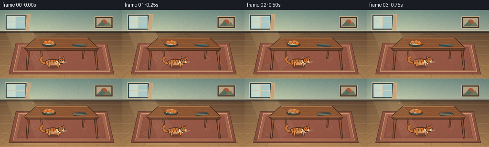
展开代码变化
--- 上一保存版本
+++ 本次保存版本
@@ -253,15 +253,15 @@
(8, 212.0, 104.0, 0.91, -12.0),
(9, 233.0, 99.0, 0.89, -13.0),
(10, 237.0, 90.0, 0.87, -16.0),
- (11, 231.0, 81.0, 0.84, -18.0),
- (12, 222.0, 72.0, 0.81, -19.0),
- (13, 211.0, 68.0, 0.78, -16.0),
- (14, 203.0, 66.0, 0.75, -11.0),
- (15, 196.0, 64.5, 0.73, -6.0),
- (16, 190.0, 63.0, 0.72, -1.0),
- (17, 186.0, 62.0, 0.71, 1.0),
- (18, 183.0, 61.5, 0.71, 2.0),
- (19, 181.0, 61.0, 0.71, 2.0),
+ (11, 232.0, 83.0, 0.84, -18.0),
+ (12, 225.0, 76.0, 0.81, -19.0),
+ (13, 216.0, 73.0, 0.78, -16.0),
+ (14, 209.0, 72.5, 0.75, -11.0),
+ (15, 203.0, 72.0, 0.73, -6.0),
+ (16, 198.0, 72.0, 0.72, -1.0),
+ (17, 194.0, 72.2, 0.71, 1.0),
+ (18, 191.0, 72.3, 0.71, 2.0),
+ (19, 189.0, 72.4, 0.71, 2.0),
]
可观测工具轨迹
实际执行的命令与返回图片。
命令 1exit 0
/bin/bash -c "pwd && rg --files -g '"'!*.mp4'"' -g '"'!*.mov'"' | sed -n '1,200p'"
命令 2exit 0
/bin/bash -c 'cat prompt.txt'
命令 3exit 0
/bin/bash -c 'cat GENERATION_RULES.md'
命令 4exit 0
/bin/bash -c 'cat task_spec.json'
命令 5exit 0
/bin/bash -c "find . -maxdepth 2 -type f -printf '%p %s bytes\\n' | sort"
命令 6exit 0
/bin/bash -c "sed -n '1,240p' artifact_io.py"
命令 7exit 0
/bin/bash -c "sed -n '1,220p' player_template.html"
命令 8exit 0
/bin/bash -c "python - <<'PY'
import PIL, numpy
print('PIL', PIL.__version__)
print('numpy', numpy.__version__)
PY"命令 9exit 0
/bin/bash -c 'rg -n "rng =|begin|PHP|TODO" generate.py'
命令 10exit 0
/bin/bash -c "sed -n '466,474p' generate.py | cat -v"
命令 11exit 0
/bin/bash -c "sed -i '470s/.*/ rng = np.random.default_rng(1000 + frame)/' generate.py && python -m py_compile generate.py"
命令 12exit 0
/bin/bash -c 'python generate.py'
命令 13exit 0
/bin/bash -c "python - <<'PY'
from PIL import Image
for i in (5,6,7,8,9,11,12,13,14):
im=Image.open(f'frames/{i:02d}.png')
im.resize((768,432), Image.Resampling.NEAREST).save(f'.tmp/check_{i:02d}.png')
PY"命令 14exit 0
/bin/bash -c 'python generate.py'
命令 15exit 0
/bin/bash -c "python - <<'PY'
import json, numpy as np
from PIL import Image
from pathlib import Path
z=np.load('pixels.npz')['pixels']
print('tensor', z.shape, z.dtype)
frames=[np.array(Image.open(f'frames/{i:02d}.png')) for i in range(20)]
a=np.stack(frames)
print('frames', a.shape, a.dtype, 'range', (int(a.min()), int(a.max())))
print('unique colors/frame', [len(np.unique(x.reshape(-1,3), axis=0)) for x in a])
print('frame-to-frame changed pixels', [int(np.any(a[i]"'!=a[i-1], axis=2).sum()) for i in range(1,20)])
html=Path('"'index.html').read_text()
print('player', 'window.__pixelReady=true' in html, 'bytes', len(html))
print('files', sorted(p.name for p in Path('.').iterdir()))
PY"命令 16exit 0
/bin/bash -c "git status --short 2>/dev/null || true; python -m py_compile generate.py; test -s pixels.npz && test -s index.html && test -s frames/19.png && echo 'artifact checks passed'"
视觉工具实际返回图片 1
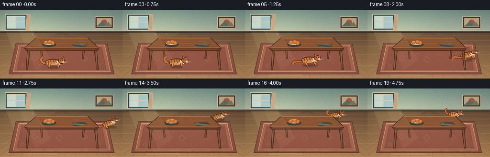
视觉工具实际返回图片 2
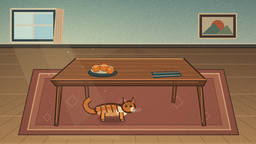
视觉工具实际返回图片 3
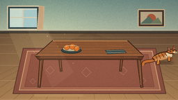
视觉工具实际返回图片 4
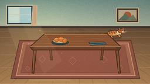
视觉工具实际返回图片 5
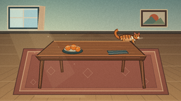
视觉工具实际返回图片 6
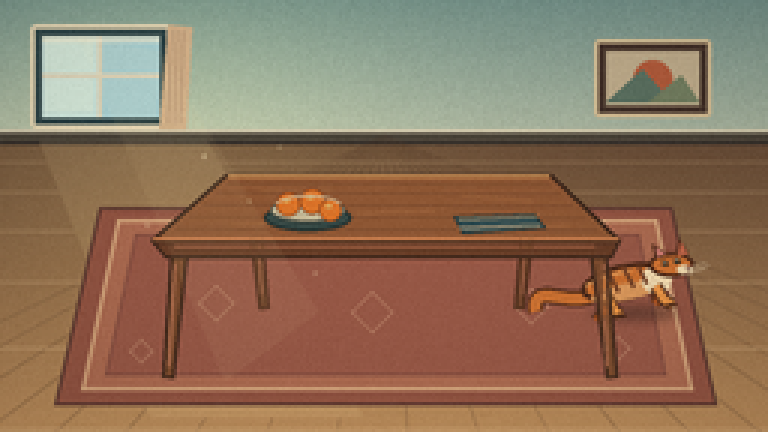
视觉工具实际返回图片 7

视觉工具实际返回图片 8

视觉工具实际返回图片 9

视觉工具实际返回图片 10
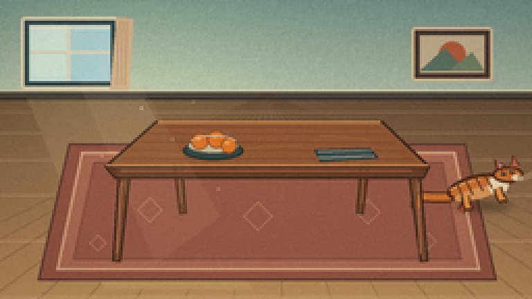
视觉工具实际返回图片 11

视觉工具实际返回图片 12
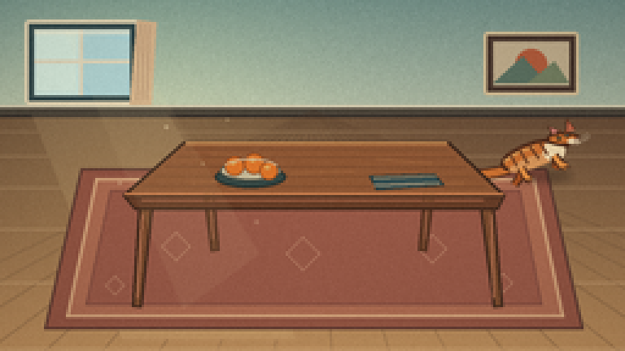
视觉工具实际返回图片 13

视觉工具实际返回图片 14
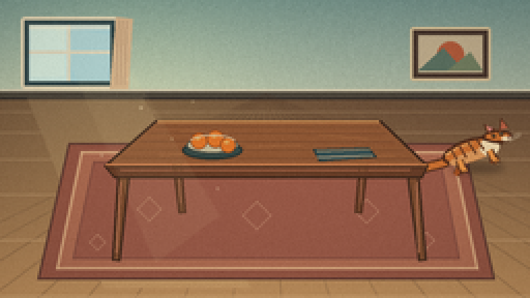
视觉工具实际返回图片 15
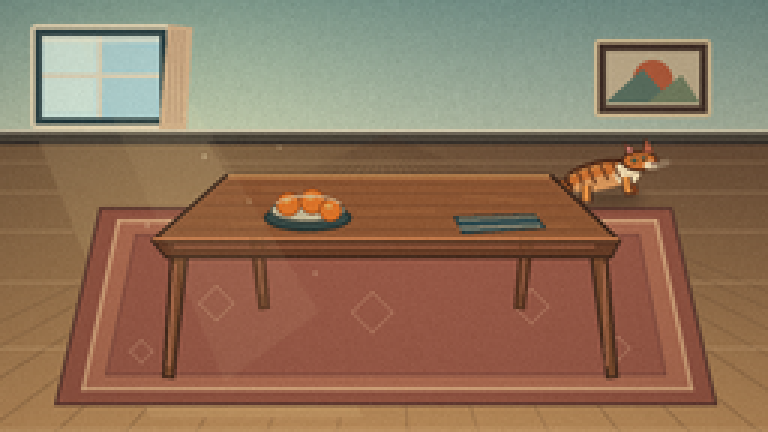
视觉工具实际返回图片 16
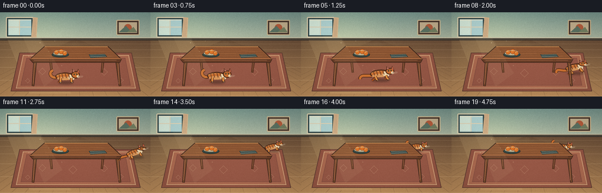
视觉工具实际返回图片 17
视觉工具实际返回图片 18
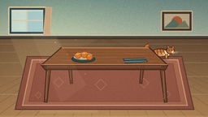
保存候选 2 份；完成命令 16 次；可验证图片返回 18 张。原始 API 响应与完整日志保留在本地。